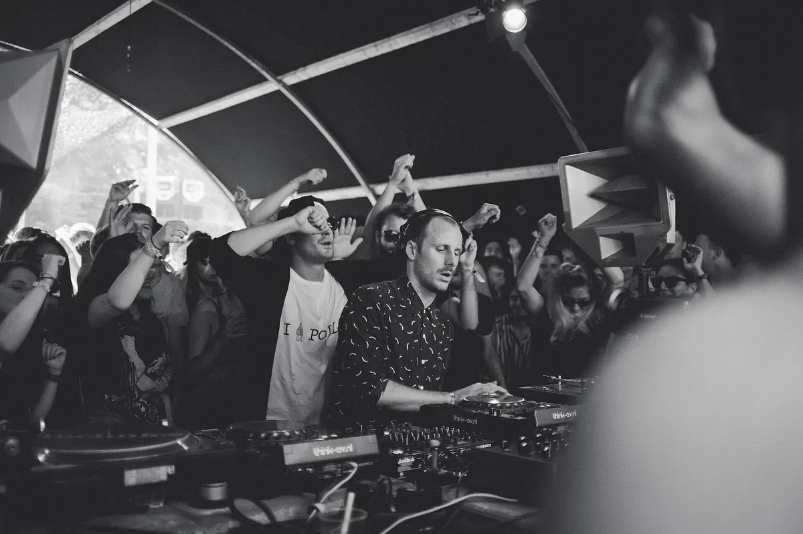
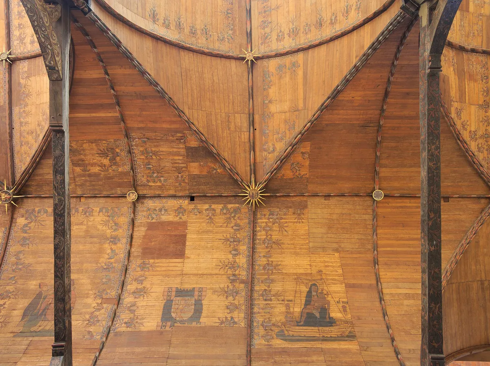

Festival guide, 2027
Dekmantel Festival: 2027 dates, tickets and Selectors
Amsterdam's electronic music festival: when it is in 2027, where it is held, how the tickets work, what Dekmantel Selectors in Croatia is and which sets to hear first.
A festival that began as club nights.
Dekmantel started as a series of club nights run by two Dutch DJs, Thomas Martojo and Casper Tielrooij, and became a record label in 2009 and a festival in 2013. Its programme runs from house and techno to ambient and experimental music.
This page answers what people ask before they go. What is Dekmantel, when is it in 2027, where is it, how do the tickets work and what is Dekmantel Selectors? It ends with five sets from the festival's own channel, so you can hear the room before you buy.
What is Dekmantel Festival?
Dekmantel is an Amsterdam festival of electronic music run by the Dekmantel label and its two founders. Thomas Martojo and Casper Tielrooij began with club nights, and the first festival was held in 2013 at the Amsterdamse Bos. The label followed an earlier start: it was founded in 2009, according to Time Out. It is a day festival, and many visitors sleep in Amsterdam and travel to the park.

The tenth-anniversary edition in 2024 ran for ten days with more than 200 artists, and it used venues far beyond the park, including Het HEM in Zaandam, the Oude Kerk and waterfront venues on the IJ, according to Time Out and Casa. The festival also has sister events. Lente Kabinet is a spring event, Dekmantel Selectors is the Croatian festival covered below, and a Dekmantel festival was held in São Paulo in 2018.
If you are comparing festivals, the best electronic music festivals in Europe puts Dekmantel next to the others by sound and setting, and Sónar in Barcelona is the nearest comparison for a festival built around discovery.
When is Dekmantel 2027?
Dekmantel's own site had not confirmed 2027 dates on 2 October 2026. Its home page says the festival "returns to the Amsterdamse Bos in 2027" and that tickets are on sale. Listings on Skiddle and I amsterdam give Wednesday 28 July to Sunday 1 August 2027, and I amsterdam calls it the 13th edition. Treat those as unconfirmed until the festival publishes them.
The 2026 edition is the best guide to the shape of the week. It ran from Wednesday 29 July to Sunday 2 August 2026, and the official FAQ describes it day by day.
| Day | 2026 programme | Where |
|---|---|---|
| Wednesday | Opening concert (Space Afrika) | Oude Kerk |
| Thursday | Into the City, a new programme | Melkweg and Paradiso |
| Friday to Sunday | The festival | Amsterdamse Bos, Amstelveen |
| Friday to Sunday | Night programme | RADION, Garage Noord, ISO, RAUM |
Dekmantel at Dawn ran from 11:00 to 14:00 on Friday to Sunday, with the Selectors, Greenhouse and RADAR stages open to weekend-ticket holders only. Single-day grounds opened at 14:00. This page is updated when Dekmantel confirms the 2027 dates.
Where is Dekmantel held?
Dekmantel's main site is the Amsterdamse Bos, at Nieuwe Meerlaan 1 in Amstelveen, a large wooded park south of central Amsterdam. Most of the festival is here from Friday to Sunday. The shuttle and the camping site are in the ticket section below.

The week also uses the city. The Oude Kerk hosted the opening concert in 2026. Melkweg and Paradiso, two music venues in the city, hosted Into the City on the Thursday, and the concerts were open to all ages. The night programme in 2026 used RADION, Garage Noord, ISO and RAUM. Age limits were 18 and over at ISO and RADION and 21 and over at Garage Noord and RAUM.
For the city itself, the best clubs in Amsterdam covers where to go when the festival is not on.
How do Dekmantel tickets work?
Dekmantel sells several kinds of ticket, and the rules below come from the festival's FAQ, which described the 2026 edition when it was read on 2 October 2026. The rules may change for 2027. This page does not print a price, because the only figures found were on aggregator sites that disagreed with each other. The official shop is the place for the current price.
- Festival tickets. The festival sold 5-day, 4-day and 3-day weekend tickets and single-day tickets. A 5-day wristband gives full access to the night programme.
- Night tickets. The night programme is ticketed separately from the festival.
- Oude Kerk and Into the City. Each had its own tickets.
- Age. The minimum age for the festival is 18.
- Changes. There are no refunds and no change of ticket. Official resale is capped at face value.
- Payment. Klarna is accepted.
For a stay, Dekmantel's camping is at EuroParcs Amsterdamse Bos, about a 15-minute walk from the site, with check-in on Thursday and check-out on Monday at 10:00. Cabins and tents were available. A shuttle ran from Amstel Station at €14.50 return when bought online, €15.50 on site, and €8.50 one way back. Parking cost €40 for the weekend or €20 a day, and lockers cost €11.50 for a medium and €14.50 for a large. All food on site is vegetarian. Phone filming is discouraged and professional cameras are not allowed.
What is Dekmantel Selectors?
Dekmantel Selectors is a separate festival in Tisno, Croatia, held at The Garden Resort on the Adriatic coast. It is not the Selectors stage in Amsterdam, which is one of the stages at the main festival.
The 2027 edition is on 19 to 23 August 2027, according to the festival's official site, with tickets on sale and the line-up to be announced. A search snippet showed 20 to 24 August, which is last year's pattern, so check the official page. The 2026 edition ran on 20 to 24 August, and the festival's Instagram described it as its tenth and as sold out.
The format is five days with limited capacity. The days are spent on the coast and on boat parties, and the nights are at Barbarella's, an open-air club. The site names its areas as Beach Bar, Magnolia, Voodoo, The Nest, Beach Main and Barbarella's Discotheque, and there is an island party. If Dekmantel in Amsterdam is a city weekend, Selectors is a week by the sea.
What does Dekmantel book?
Dekmantel books DJs and live acts from across electronic music. The opening concert in 2026 was Space Afrika at the Oude Kerk. Boiler Room filmed Motor City Drum Ensemble at Dekmantel in 2014, and the Amsterdam clubs guide links that set. The 2027 line-up was not confirmed as of 2 October 2026.
The five sets below are from the festival's own channel and come from 2025.
Which Dekmantel sets should you hear first?
Start with the three sets from The Loop stage, then the two from RADAR. The Loop sets are the most watched of the five, and RADAR is the stage that is open at Dekmantel at Dawn.
For a set from outside Dekmantel, the Selector plays a DJ set at random from the same catalogue.
Dekmantel FAQ.
What is the Dekmantel Festival?
An electronic music festival in Amsterdam, held since 2013 and run by the Dekmantel label. Its main days are Friday to Sunday at the Amsterdamse Bos, with extra programmes at the Oude Kerk, Melkweg, Paradiso and night venues in the city.
When is Dekmantel 2027?
The official site had not confirmed dates on 2 October 2026. Third-party listings give 28 July to 1 August 2027. Dekmantel Selectors in Croatia is confirmed for 19 to 23 August 2027.
Where is Dekmantel Festival?
At the Amsterdamse Bos, Nieuwe Meerlaan 1, Amstelveen, south of central Amsterdam. In 2026 the week also used the Oude Kerk, Melkweg, Paradiso, RADION, Garage Noord, ISO and RAUM.
How much does a Dekmantel ticket cost?
Dekmantel's FAQ gave no price in the text read for this page, and the aggregator prices disagreed, so none is printed here. The official ticket shop has the current price.
What is the minimum age at Dekmantel?
18 for the festival. The Into the City concerts at Melkweg and Paradiso in 2026 were all ages, and some night venues were 21 and over.
Is there camping at Dekmantel?
Yes. Camping in 2026 was at EuroParcs Amsterdamse Bos, about 15 minutes' walk from the site, with cabins and tents.
What is Dekmantel Selectors?
A separate five-day festival at The Garden Resort in Tisno, Croatia. Its 2027 edition is on 19 to 23 August 2027, according to its official site.
Sources.
- Programme, venues, ages, ticket rules, camping, shuttle and logistics, read on 2 October 2026: Dekmantel Festival FAQ. The FAQ describes the 2026 edition.
- Dekmantel Selectors dates, areas and format: dekmantelselectors.com, read on 2 October 2026.
- Unconfirmed 2027 Amsterdam dates: listings on Skiddle and I amsterdam, read on 2 October 2026.
- History, founders and the 2024 tenth-anniversary edition: Time Out, "A decade of Dekmantel", and Casa, "A decade of Dekmantel Festival".
Continue reading